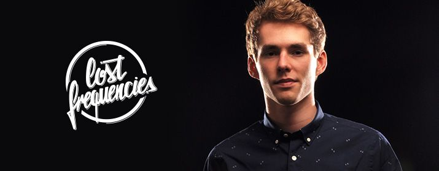

Club Circus
Felix De Laef alias Lost Frequencies ist ein belgischer DJ und Produzent. 2014
erlangte er mit dem Remix der Single Are You With Medes US-amerikanischen
Country Sängers Easton Corbin internationale Bekanntheit.
Die Version von Lost Frequencies hielt sich in Flandern fünf Wochen auf Platz 1 der
Charts und stieg im Februar 2015 auch im deutschsprachigen Raum in die Charts ein.
Ende März erreichte Are You With MePlatz 1 in Österreich. Im April kletterte die
Single auch in Deutschland und der Schweiz auf Platz 1 der Charts. Das dazugehörige
Video wurde auf YouTube bereits über 11 Millionen Mal angeklickt.
Es ist schwer zu glauben, dass Felix De Laef erst vor 3 Jahren zu produzieren
begonnen hat. Er lässt sich bei seinen Produktionen sowohl von Hip-Hop, Jazz als
auch von Drum´n Bass inspirieren.